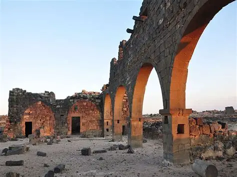
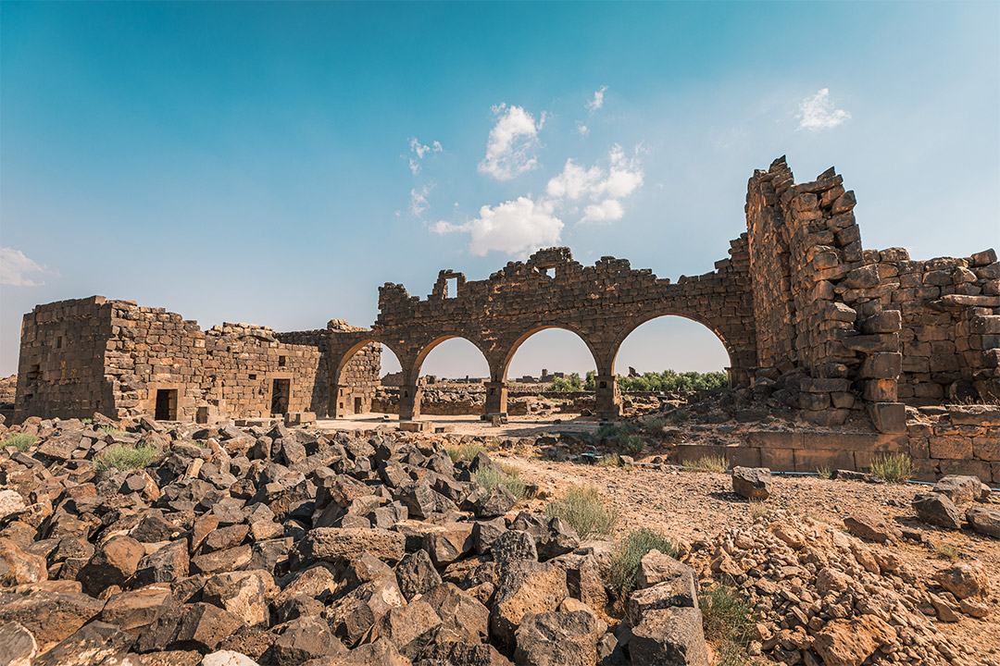

الواحة السوداء.. حيث يلتقي الحجر بالتاريخ
تقع أم الجمال في محافظة المفرق شمال الأردن، وتُعد واحدة من أهم المواقع الأثرية التي تعكس عبقرية الإنسان في التعامل مع الطبيعة. بُنيت المدينة بالكامل من حجر البازلت الأسود البركاني، مما أكسبها لقب "الواحة السوداء". في عام 2024، أدرجت منظمة اليونسكو أم الجمال رسمياً في قائمة التراث العالمي، لتصبح الموقع الأردني السابع على هذه اللائحة العريقة، تقديراً لقيمتها العالمية الاستثنائية.
القرن الأول الميلادي. بدأت كتجمعات زراعية ونقطة تجارية استراتيجية تخدم مدينة بصرى (عاصمة الأنباط).
عام 106 م. ضم الرومان المنطقة، وبُنيت الحصون العسكرية (الكاستلوم) لحماية الطرق التجارية.
القرنان الخامس والسادس. شهدت ازدهاراً كبيراً، حيث تحولت إلى مركز زراعي وتجاري يضم نحو 16 كنيسة.
عام 640 م. أعيد استخدام المباني، وتحولت بعض المنازل إلى مساجد، مع تراجع تدريجي في عدد السكان.


ارتكز قرار اليونسكو على معيارين أساسيين: الأصالة (Authenticity) حيث حافظ الموقع على عناصره المعمارية البازلتية وتصاميمه الفريدة دون تشويه جوهري. والسلامة (Integrity) بوجود نظام حماية وإدارة كافٍ يضمن صيانته واستدامته كموروث عالمي.
"من هنا جاءت فكرة أداة UmmJimalSeal؛ لتطبق نفس المعايير السيبرانية على الملفات الرقمية. التوقيع الرقمي يضمن الأصالة، والبصمة (Hash) تضمن السلامة. أم الجمال حموها عشان تضل أصلية، والأداة بتحمي ملفاتك عشان تضل أصلية."